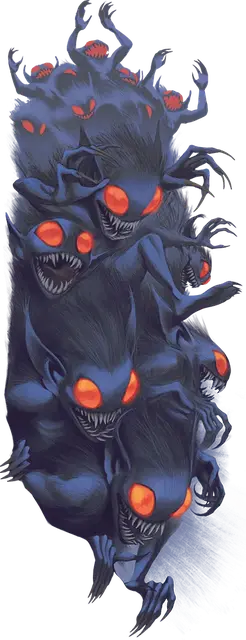

Рой бормотунов
Swarm of Gibberling
Большой рой маленьких Исчадий (демон), хаотично-злое

Класс Доспеха 12
Хиты 38 (7к10)
Скорость 30 футов
| мод | спас | ||
|---|---|---|---|
| СИЛ | 18 | +4 | +4 |
| ЛОВ | 14 | +2 | +2 |
| ТЕЛ | 11 | +0 | +0 |
| мод | спас | ||
|---|---|---|---|
| ИНТ | 5 | −3 | −3 |
| МДР | 7 | −2 | −2 |
| ХАР | 5 | −3 | −3 |
Иммунитет к состояниям захват, испуг, окаменение, опутанность, очарование, ошеломление, паралич, сбивание с ног
Чувства тёмное зрение 120 футов, пассивное Восприятие 8
Языки Язык Бормотунов
Опасность 3 (700 опыта)
Бонус мастерства +2
Особенности
Боязнь огня. Если бормотун получает урон огнем, то он совершает броски атаки и проверки характеристик с помехой до конца своего следующего хода.
Непрерывное бормотание. Все не являющиеся бормотунами и не оглохшие существа в пределах 60 футов от бормотуна совершают спасброски Телосложения для поддержания концентрации на заклинаниях и схожих эффектах с помехой.
Рой. Рой может занимать пространство другого существа и наоборот, и рой может перемещаться через любое отверстие, достаточно большое для Маленького бормотуна [gibberling]. Рой не может восстанавливать хиты или получать временные хиты.
Действия
Мультиатака. Рой совершает две атаки Скрипящими зубами.
Скрипящие зубы. . Рукопашная атака оружием: +6 к попаданию, досягаемость 0 фт., одна цель в пространстве роя. Попадание: 14 (4к4 + 4) колющего урона, либо 9 (2к4 + 4) колющего урона, если у роя осталась половина или менее хитов.
Описание
По одиночке бормотуны — не более чем досадная помеха: лопочущее волосатое существо, которое носится повсюду и нападает на все, что ему подвернется. К сожалению, бормотуны очень редко встречаются по одиночке. Они свирепствуют плотными стаями, переползая и перепрыгивая друг через друга, чтобы рвать, кромсать и пожирать все на своем пути.
Бормотуны получили свое прозвище из-за постоянной какофонии болтовни. Громкие и пронзительные звуки их назойливой чепухи отвлекают даже самых сосредоточенных существ. Рои бормотунов можно услышать задолго до того, как те окажутся в пределах видимости.
Первые представители их вида произошли из джунглей Ненасытной утробы, слоя Бездны под контролем лорда демонов Демогоргона. Воздействие Принца демонов привило бормотунам обобщенный разум улья, защищая их от магических внушений. Однако, в отличии от многих демонов, все бормотуны боятся огня.
На материальном плане бормотуны обычно обитают в густых зарослях Подземья.